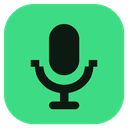

Talk to the players standing near you in Woozworld. The closer they are, the louder you hear each other; walk away and they fade out.
Chrome needs your permission to use the microphone. Your voice only goes to nearby players, and only while you talk.